 

Т-44

Основные тактико-технические характеристики
- Масса 31,8 т
- Длина 7,65 м
- Высота 2,41 м
- Лобовая броня 90 мм
- Бортовая броня 75 мм
- Макс. скорость 51 км\ч
- Запас хода 300 км
- Экипаж 4 человека
- Вооружение:
- Пушка 85 мм
- 2 пулемёта 7,62 мм
Танк Т-44 был разработан в конструкторском бюро завода № 183 в Нижнем Тагиле под руководством А. А. Морозова. Танк существенным образом отличался от Т-34-85. Отличия были в устройстве, компоновке, габаритных размерах, а также в форме и толщине брони корпуса и башни. Двигатель располагался поперек корпуса. Это дало возможность сократить длину силового отделения, что позволило сделать более комфортным размещение экипажа.
Высота силового отделения была уменьшена. Этого удалось достичь благодаря переносу воздухоочистителя из развала цилиндров V-образного двигателя к борту. На прежних моделях вентилятор выступал за габариты картера. Но в танке Т-44 вместо этого вентилятора находился компактный маховик. В результате преобразований стало возможным смонтировать дизель на низкой подмоторной раме. Рама была жесткой, но вместе с тем легкой. Благодаря многочисленным усовершенствованиям высота корпуса уменьшилась до 300 мм.
Ходовая часть танка включала в себя пять обрезиненных опорных катков на борт, ведущее колесо заднего расположения с пятью роликами, направляющее колесо с натяжным механизмом. Танк имел индивидуальную торсионную подвеску опорных катков. Соединение двигателя с пятискоростной коробкой передач осуществлялось так называемой гитарой, т. е. повышающим редуктором, состоящим из трех цилиндрических шестерен.
Благодаря по-новому скомпонованному моторно-трансмиссионному отделению стало возможным сместить башню в центр корпуса. Появилось свободное место для люка механика-водителя.
Т-44 прошел испытания и был пущен в производство на танковом заводе № 75 в Харькове. В конце 1944 г. изготовили 25 единиц, в 1945 г. — 860 машин данного типа. Через два года производство Т-44 прекратилось. Танк Т-44 не принимал участия в военных действиях во время Великой Отечественной войны.